Omnissa Horizon True SSO with UAG SAML
Navigation
Change Log
- 2024-02-29 - added link to Omnissa Tech Zone Deploying Horizon 8 and True SSO in Multi-Forest Environments
Overview
To configure SAML on Unified Access Gateway (UAG) you must have the following versions:
- UAG 3.8 or newer
- Connection Servers 7.11 or newer
- For Windows 10 version 2004, deploy Horizon 2103 (8.2) or newer.
True SSO is optional.
- SAML does not provide the user's password to Horizon, which means that Horizon cannot perform single sign-on to the Horizon Agent machine and thus the Horizon Agent machine will prompt the user to login again. This usually means the user has to login twice.
- To eliminate the second logon on the Horizon Agent machine, implement True SSO, which generates certificates for each user and then uses those certificates to automatically sign into the Horizon Agent machine.
Horizon Enrollment Servers ask Microsoft Certificate Authority servers to generate the SSO certificates for each user. This is an identity operation and thus the Horizon Enrollment Servers should be treated like Domain Controllers.
- The Horizon Enrollment Server software must be installed on standalone servers (no other Horizon components).
- For High Availability you can build two Horizon Enrollment Servers.
-
For multiple forests, see Omnissa Tech Zone Deploying Horizon 8 and True SSO in Multi-Forest Environments
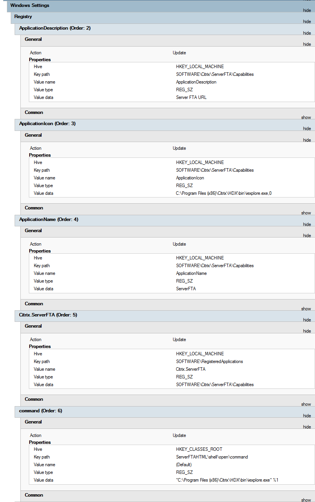
When you use Horizon Client to connect to a UAG that is SAML-enabled:
- It opens the default browser and prompts the user to sign into your SAML Identity Provider. If the user is already signed in then the user won't see any sign-in prompt.
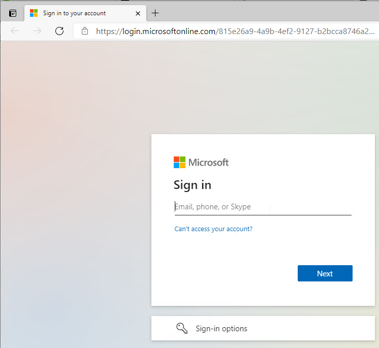
- After sign-in, the browser will then prompt the user to open Horizon Client.
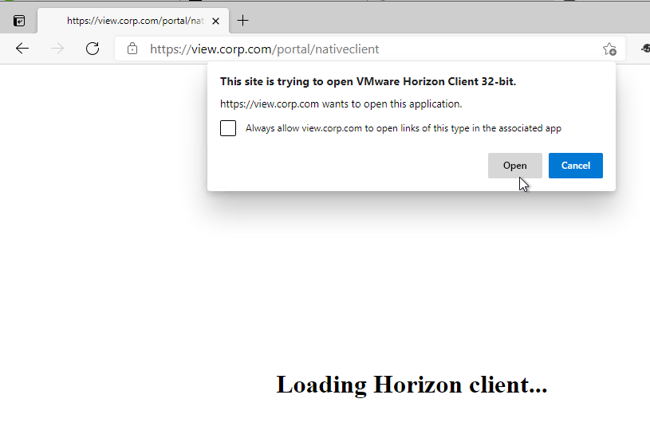
- If the user locks the desktop then the user will need to know the local Active Directory password to unlock it.
Certificate Authority
Horizon Enrollment Servers can use a Microsoft Certificate Authority that already exists. Or you can install Microsoft Certificate Authority on the Horizon Enrollment Servers. If you have two Enrollment Servers, then install Microsoft Certificate Authority on both of the servers.
- Install Microsoft Certificate Authority from Server Manager > Manage > Add Roles and Features.
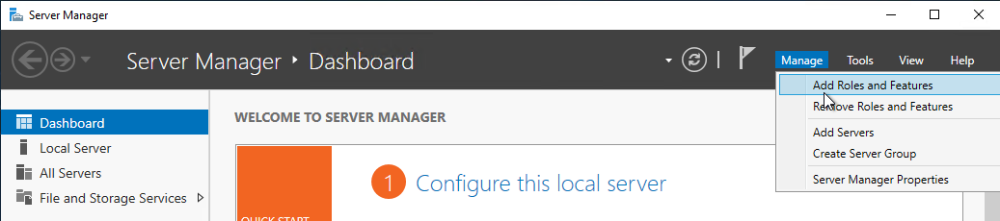
- Select Active Directory Certificate Services.
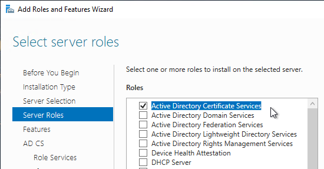
- The only Role Service needed for True SSO is Certification Authority.
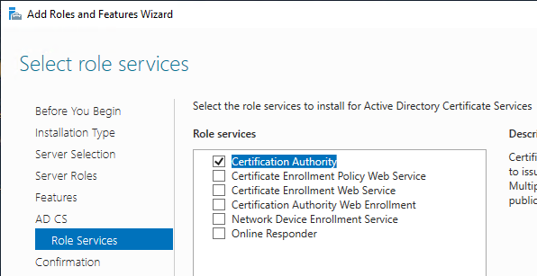
The Microsoft Certificate Authority must be an Enterprise CA.
- After role installation, click the flag icon and then click the link to Configure Active Directory Certificate Services.
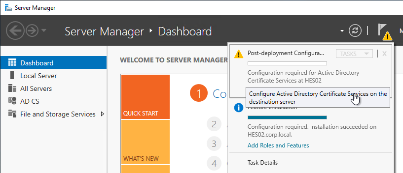
- In the Setup Type page, select Enterprise CA.
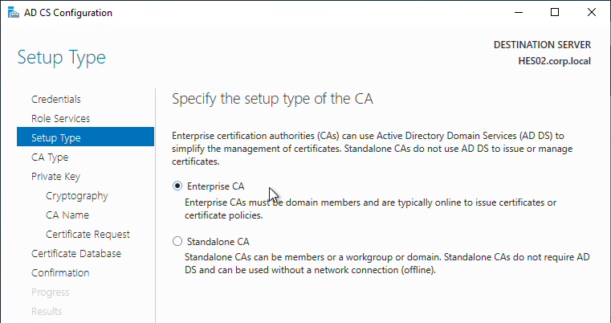
- In the CA Type page, if you already have a Root CA, then you can select Subordinate CA. Otherwise, you need at least one Root CA in your environment.
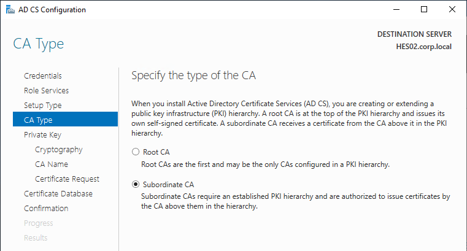
After Microsoft CA is installed, run the following commands:
certutil -setreg DBFlags +DBFLAGS_ENABLEVOLATILEREQUESTS
certutil -setreg ca\CRLFlags +CRLF_REVCHECK_IGNORE_OFFLINE
sc stop certsvc
sc start certsvc
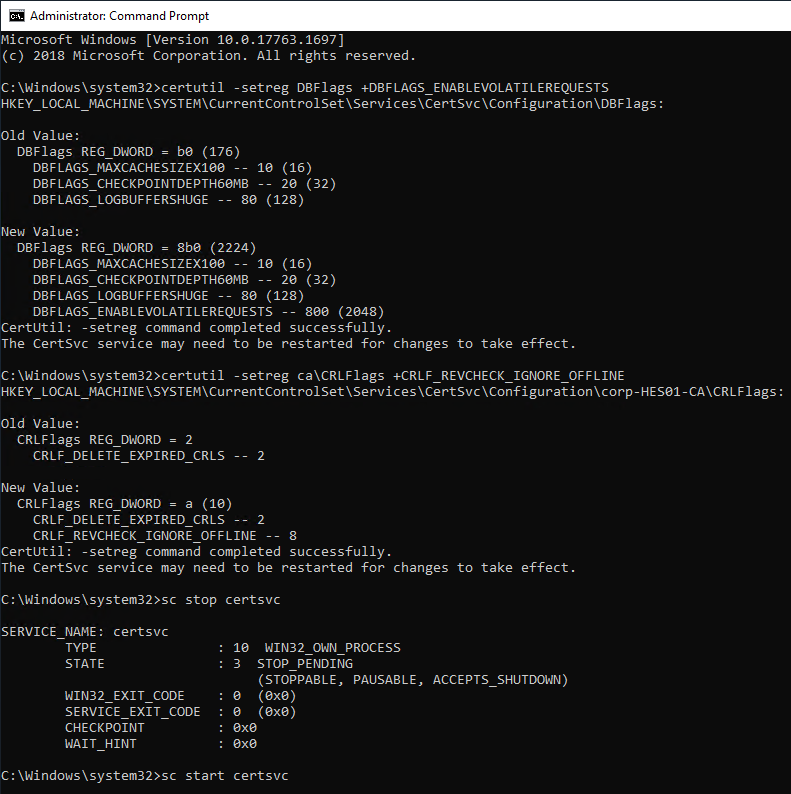
If you just built a new Certificate Authority server then True SSO won't work until you run gpupdate /force on all of your Domain Controllers and Horizon Agent machines. Or wait several hours for group policy to update.
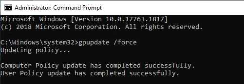
Certificate Template
- On the Certificate Authority machine, from Start Menu, run Certification Authority.
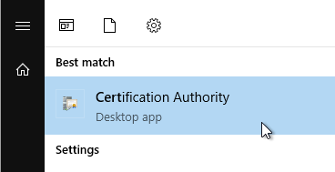
- Right-click the Certificate Templates node and click Manage.
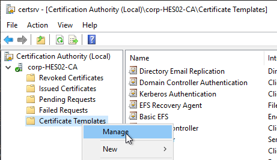
- Right-click the Smartcard Logon template and click Duplicate Template.
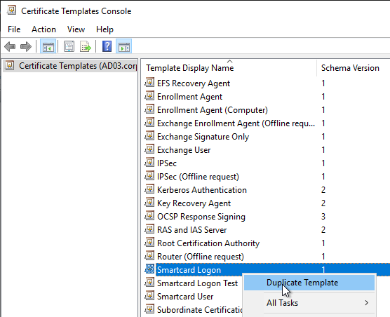
- On the Compatibility tab, change the drop-down for Certification Authority to Windows Server 2008 R2.
- Change the drop-down for Certificate recipient to Windows 7 / Server 2008 R2.
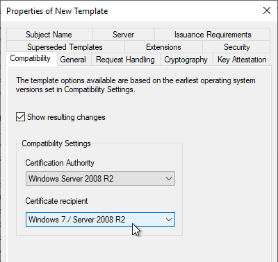
- On the General tab, name it True SSO or similar.
- Change the Validity Period to 1 day or similar.
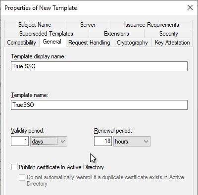
- On the Request Handling tab, change the drop-down for Purpose to Signature and smartcard logon.
- Check the box next to For automatic renewal of smart card certificates, use the existing key if a new key cannot be created.
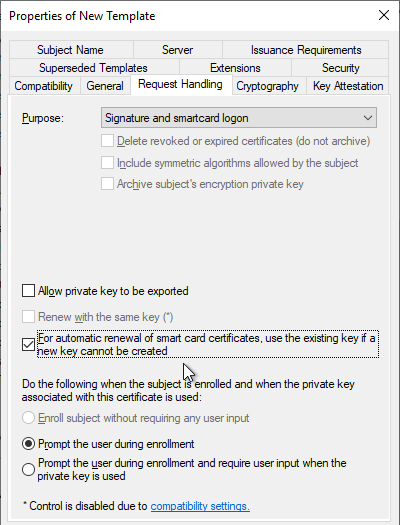
- On the Cryptography tab, change the drop-down for Provider Category to Key Storage Provider.
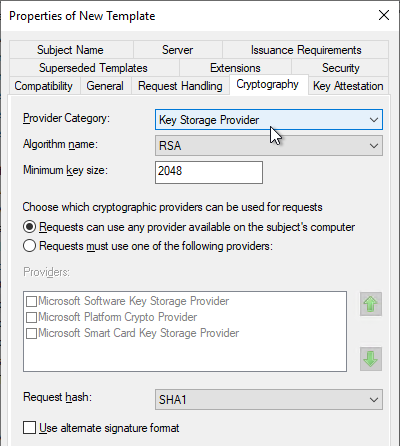
- On the Server tab, check the top box for Do not store certificates and requests in the CA database.
- Uncheck the bottom box for Do not include revocation information in issued certificates.
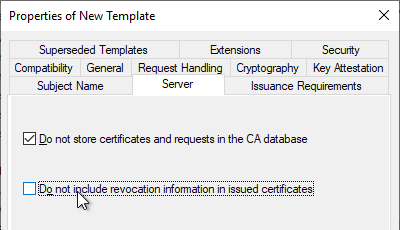
- On the Issuance Requirements tab, check the box next to This number of authorized signatures and enter 1 as the value.
- Change the drop-down for Policy type required in signature to Application policy.
- Change the drop-down for Application policy to Certificate Request Agent.
- At the bottom, change the selection to Valid existing certificate.
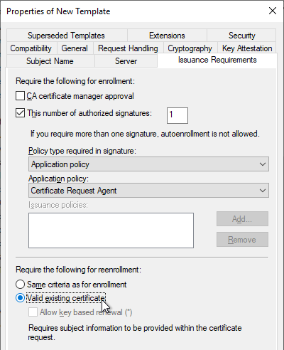
- On the Security tab, add your Horizon Enrollment Servers computer objects. This can be an AD group instead of individual servers.
- For each Enrollment Server computer object, on the bottom, check the Allow box for the Enroll permission. Click OK when done.
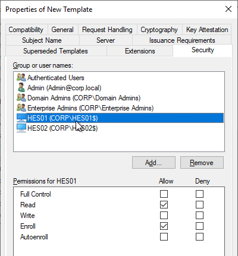
- Back in the Certificate Templates Console, right-click the Enrollment Agent (Computer) template and click Properties.
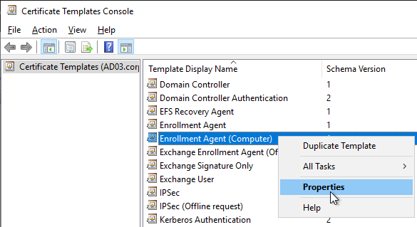
- On the Security tab, add your Horizon Enrollment Servers computer objects. This can be an AD group instead of individual servers.
- For each Enrollment Server computer object, on the bottom, check the Allow box for the Enroll permission. Click OK when done.
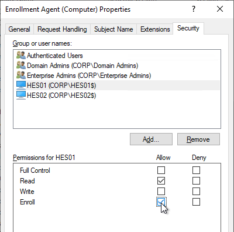
- Close the Certificate Templates Console.
- Back in the Certification Authority Console, with Certificate Templates highlighted on the left, if your environment has multiple CAs but this CA is dedicated to True SSO, then delete all templates from the right. Note: Domain Controllers must have certificates installed so make sure you have at least one other CA that is issuing Domain Controller certificates.
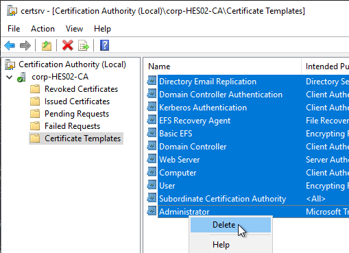
- Right-click Certificate Templates and click New > Certificate Template to Issue.
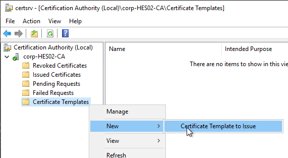
- Select Enrollment Agent (Computer) and click OK.
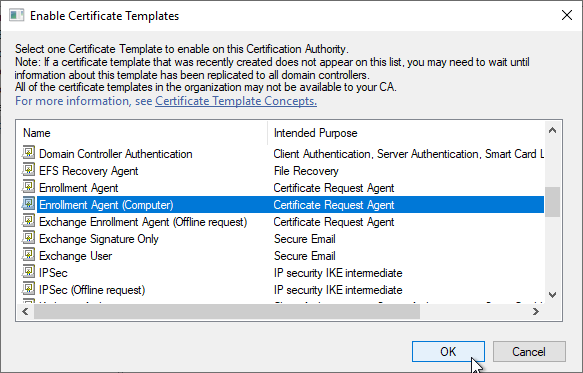
- Issue another certificate template but this time select the True SSO template.
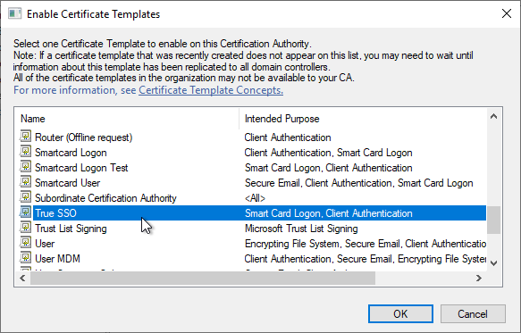
- Your CA should now show the two templates.
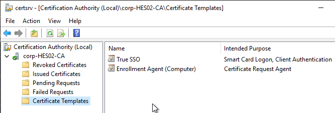
- If you have a second CA, and if it is dedicated to True SSO, then delete all templates from that CA. Then configure it to issue the same two templates.
Enrollment Server
Horizon Enrollment Server must be installed on dedicated machine(s) that don't have any other Horizon components installed.
- Login to the new Horizon Enrollment Server that has at least 4 GB of RAM.
- Run certlm.msc.
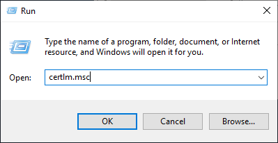
- Expand Personal, then right-click Certificates, expand All Tasks, and click Request New Certificate.
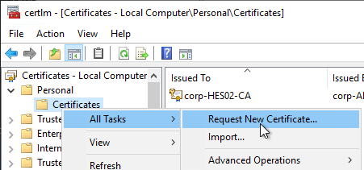
- In the Before You Begin page, click Next.
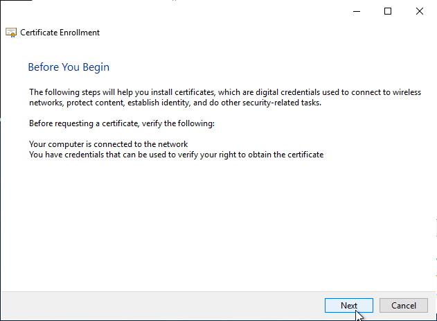
- In the Select Certificate Enrollment Policy page, click Next.
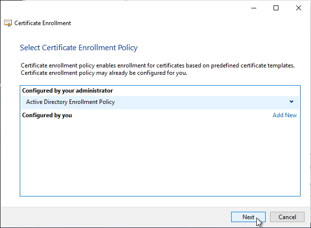
- In the Request Certificates page, check the box next to Enrollment Agent (Computer) and then click Enroll.
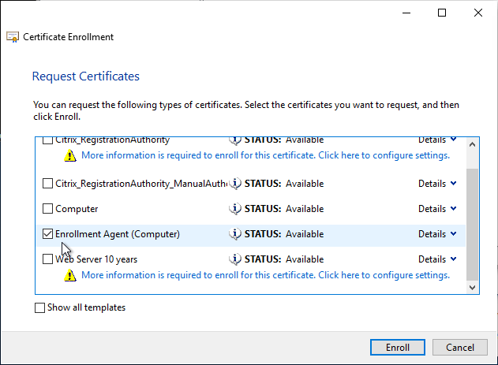
- In the Certificate Installation Results page, click Finish.
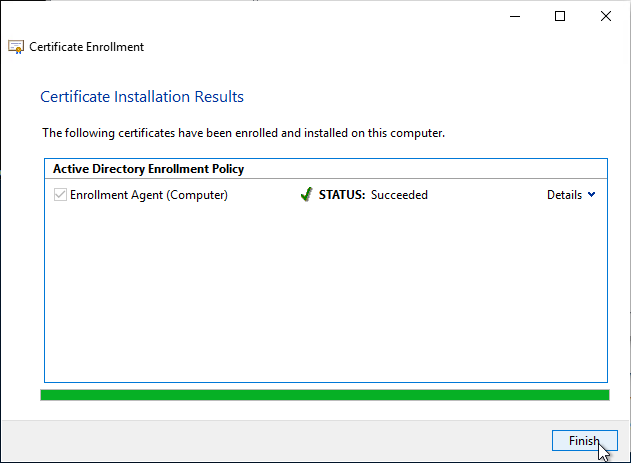
- Notice the expiration date on the Enrollment Agent certificate. Make sure you renew it before it expires.
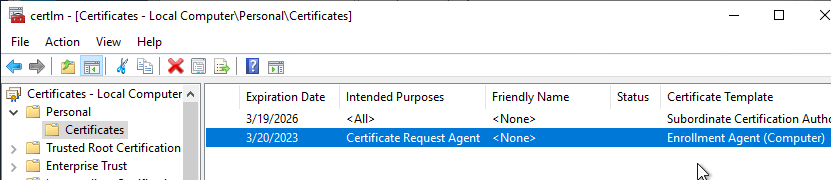
- In the Before You Begin page, click Next.
- Go to the downloaded Horizon software and run VMware-Horizon-Connection-Server-x86_x64.exe.
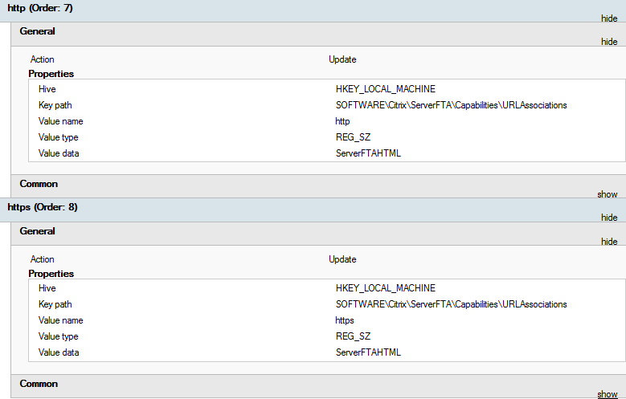
- In the Welcome to the Installation Wizard for VMware Horizon Connection Server page, click Next.
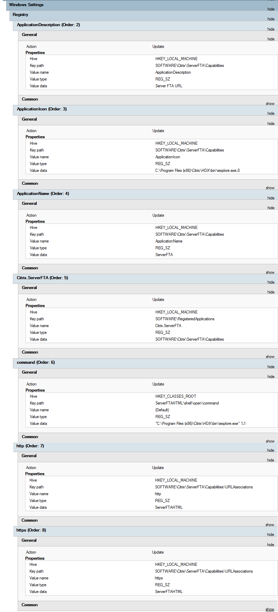
- In the Destination Folder page, click Next.
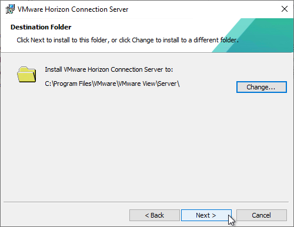
- In the Installation Options page, change the selection to Horizon Enrollment Server and click Next.
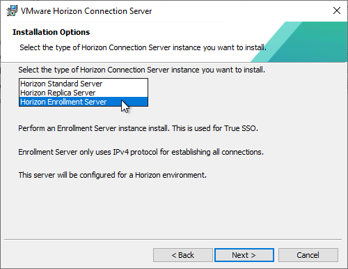
- In the Firewall Configuration page, click Next.
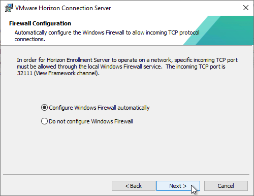
- In the Ready to Install the Program page, click Install.
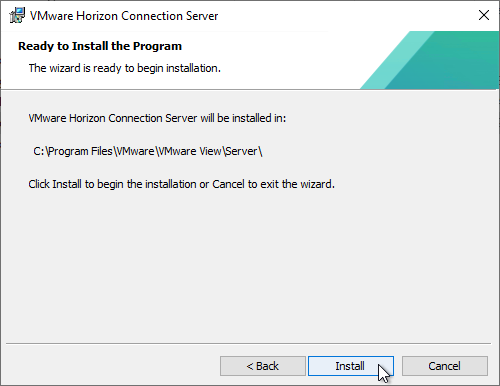
- In the Installer Completed page, click Finish.
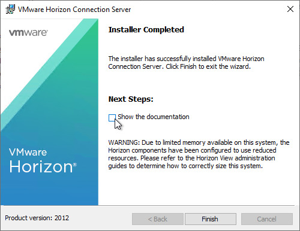
-
If Microsoft CA is installed on the Enrollment Server, then run regedit.
- Go to HKLM\Software\VMware, Inc.\VMware VDM.
- Create a new Key named Enrollment Service.
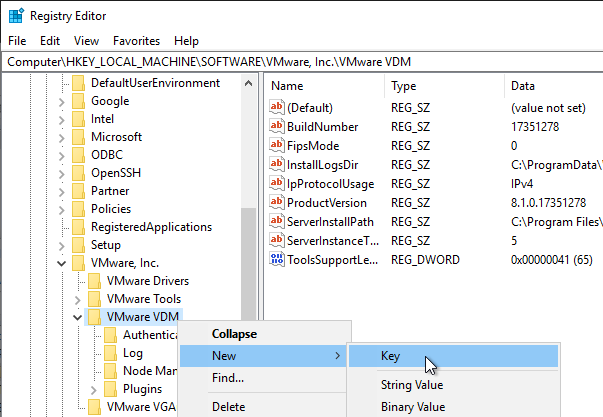
- Under Enrollment Service, create a new String (REG_SZ) value named PreferLocalCa and set it to 1.
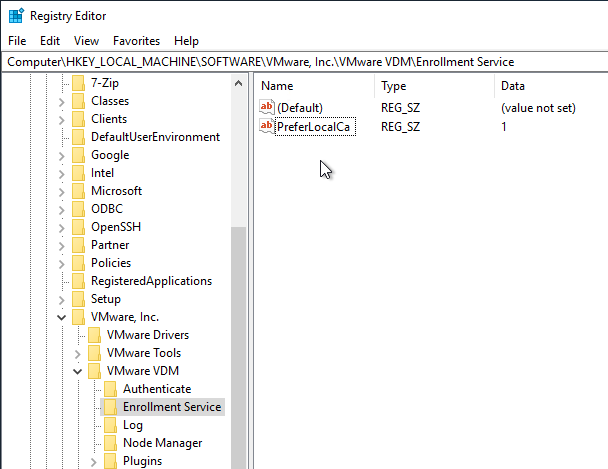
- Also add string values for UseKerberosAuthenticationToCa = false and UseNTLMAuthenticationToCa = true

- If you have two Enrollment Servers, then repeat this entire section on the other server. This includes requesting the Enrollment Agent certificate, installing the Enrollment Server software, and setting the PreferLocalCa registry value.
Trust
- Log in to a Connection Server and run certlm.msc.
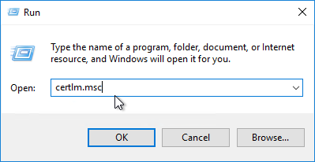
- On the left, expand VMware Horizon View Certificates and then click Certificates.
- On the right, find the certificate with the Friendly Name vdm.ec, right-click it, expand All Tasks, and then click Export. All Connection Servers have the same certificate so you only need to export from one of the Connection Servers.
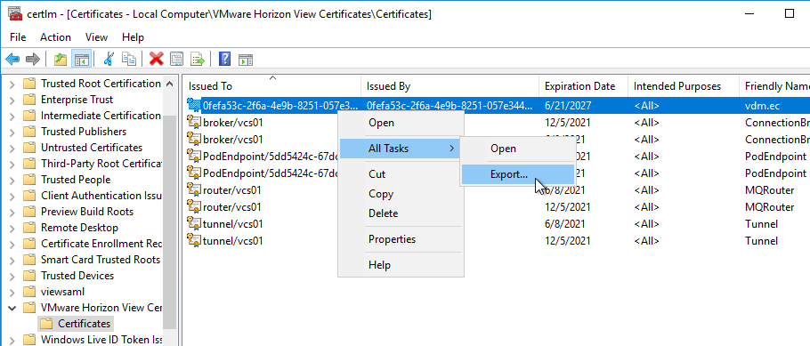
- In the Export Private Key page, select No, do not export the private key, and then click Next.
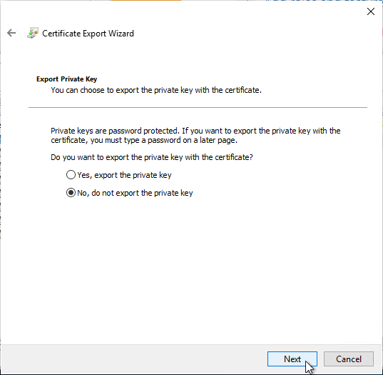
- In the Export File Format page, leave it set to DER, and then click Next.
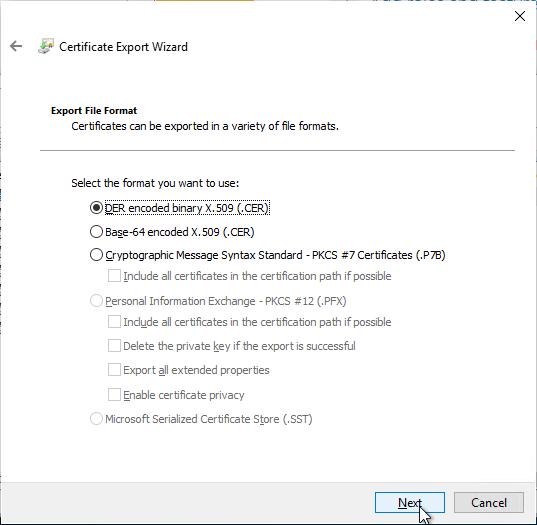
- Save the certificate to a file that you can access from your Enrollment Server(s).
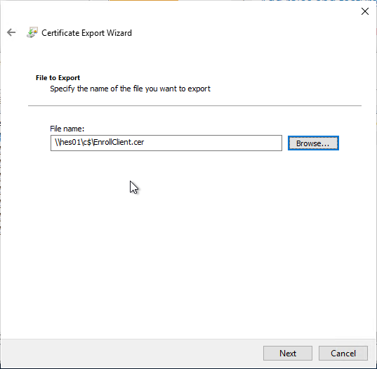
- Log in to an Enrollment Server and run certlm.msc.
- On the left, right-click VMware Horizon View Enrollment Server Trusted Roots, expand All Tasks, and click Import.
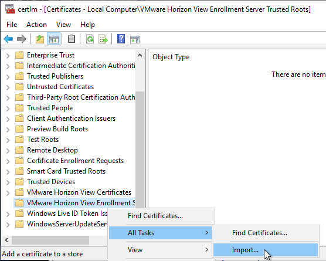
- In the Welcome to the Certificate Import Wizard page, click Next.
- In the File to Import page, browse to the certificate that you exported from the Connection Server and then click Next.
- In the Certificate Store page, VMware Horizon View Enrollment Server Trusted Roots should already be selected so just click Next.
- In the Completing the Certificate Import Wizard page, click Finish.
- Repeat the certificate import process on the other Horizon Enrollment Server.
SAML to UAG
- Login to your SAML Identity Provider (IdP) and create an application for Unified Access Gateway.
- For Okta, see Omnissa Tech Zone.
-
Azure AD has a gallery application to make configuration easier. Or use the following values:
- Identifier = https://*.HORIZON_UAG_FQDN.com/portal
- Reply URL (Assertion Consume Service URL = https://
- When done, it should look something like this:
- Download the Federation Metadata XML from your Identity Provider. The Metadata Url doesn't seem to work.
- Login to your UAG admin page (https://
- Select Configure Manually.
- Scroll down to the section named Identity Bridging Settings and click Upload Identity Provider Metadata.
- In Unified Access Gateway 2312 and newer, click Upload IDP Metadata.
- Click Select in the IDP Metadata row.
- Browse to the metadata .xml file and then click Save.
- At the top of the page, next to Edge Service Settings click SHOW.
- Next to Horizon Settings click the gear icon.
- At the bottom of the page, click More.
- At the top of the page, change the drop-down for Auth Methods to SAML.
- Change the drop-down for Identity Provider to the SAML Identifier in the Metadata that you just imported.
- At the bottom of the page click Save.
- Login to Horizon Console.
- In the left menu, go to Settings > Servers.
- On the right, click the tab named Connection Servers.
- Highlight a Connection Server that UAG talks to and click Edit.
- Switch to the tab named Authentication.
- Change the drop-down for Delegation of Authentication to VMware Horizon (SAML 2.0 Authenticator) to Allowed.
- Click the button named Manage SAML Authenticators.
- Click Add.
- Change the selection for Type to Static. Dynamic seems to only be valid for Omnissa Access.
- Go to your Metadata .xml file and edit it with a text editor. Then copy its contents to your clipboard.
- Back in Horizon Console, in the SAML Metadata field, paste in the contents.
- Give your SAML 2.0 Authenticator a name and click OK.
- Click OK to close the Manage SAML Authenticators window.
- Edit other Connection Servers that UAG talks to and go to the Authentication tab.
- Set SAML 2.0 Authenticator to Allowed and then click the Manage SAML Authenticators button.
- The previously created SAML Authenticator should already be there so just click Edit.
- At the bottom, check the box next to Enabled for Connection Server and then click OK. Repeat on any other Connection Server that UAG talks to.
- In Horizon Console, if you go to Monitor > Dashboard and then click VIEW in the System Health section.
- On the left go to Other Components. On the right go to the tab named SAML 2.0. You should see your SAML Authenticator.
Enable True SSO
Login to one of the Connection Servers and open a Command Prompt as administrator. The commands in this section have case sensitive parameter names. These commands are vdmutil, not vdmadmin.
Run the following command to add each Enrollment Server. Notes:
- For the
--authPasswordfields, you enter"*"(with quotes) to be prompted to enter the password instead of specifying it at the command line. --authAsfields do not include the domain name since domain is a different field.
vdmUtil --authAs admin-username --authDomain domain-name --authPassword admin-user-password --truesso --environment --add --enrollmentServer enroll-server1-fqdn,enroll-server2-fqdn
Run the following command to see the available certificate authorities and certificate templates for a particular domain.
vdmUtil --authAs admin-username --authDomain domain-name --authPassword admin-user-password --truesso --environment --list --enrollmentServer enroll-server-fqdn --domain domain-fqdn
Run the following command to enable the Enrollment Servers for a particular domain. This syntax configures the Enrollment Servers as active/passive (failover). Note: certificateServer is the CA name from the previous command and not the server's FQDN.
vdmUtil --authAs admin-username --authDomain domain-name --authPassword admin-user-password --truesso --create --connector --domain domain-fqdn --template TrueSSO-template-name --primaryEnrollmentServer enroll-server-fqdn --secondaryEnrollmentServer enroll-server-fqdn --certificateServer ca1-common-name1,ca2-common-name --mode enabled
Run the following command to see the SAML Authenticators configured in Horizon Console.
vdmUtil --authAs admin-username --authDomain domain-name --authPassword admin-user-password --truesso --list --authenticator
Run the following command to enable True SSO for a particular SAML Authenticator. Enter either ENALBED or ALWAYS.
vdmUtil --authAs admin-username --authDomain domain-name --authPassword admin-user-password --truesso --authenticator --edit --name authenticator-name --truessoMode {ENABLED|ALWAYS}
For more info, see Command-line Reference for Configuring True SSO at Omnissa Docs.
If you prefer to load balance your Enrollment Servers instead of active/passive, do the following:
- On a Connection Server, run adsiedit.msc.
- Change the Connection Point to dc=vdi,dc=vmware,dc=int.
- Change the Computer to localhost and then click OK.
- On the left, expand Properties, and then click Global.
- On the right, double-click Common.
- Find pae-NameValuePair in the list and Edit it.
- Enter cs-view-certsso-enable-es-loadbalance=true and then click Add.
- Click OK a couple times to close everything.
You can view the status of True SSO in Horizon Console.
- In Horizon Console, go to Monitor > Dashboard and on the right, in the System Health section, click VIEW.
- With Components selected on the left, on the right is a tab named TrueSSO.